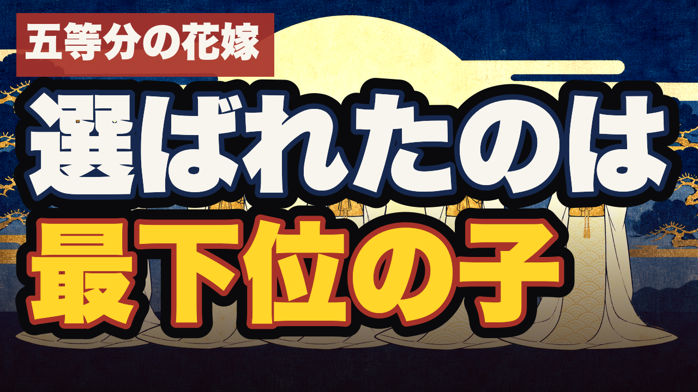
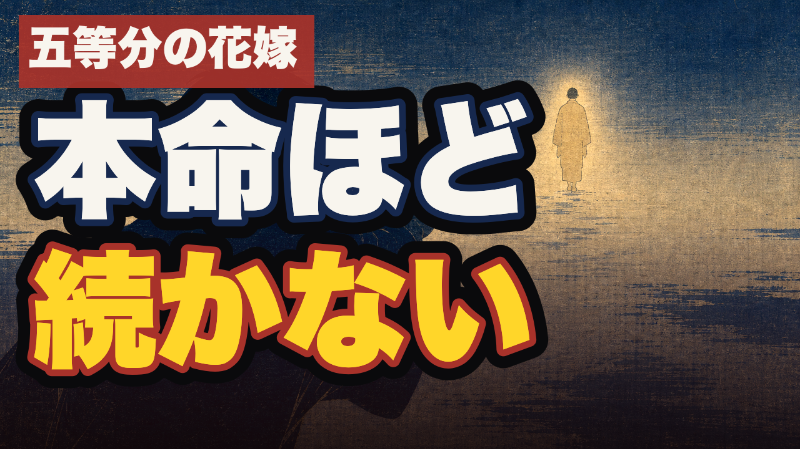
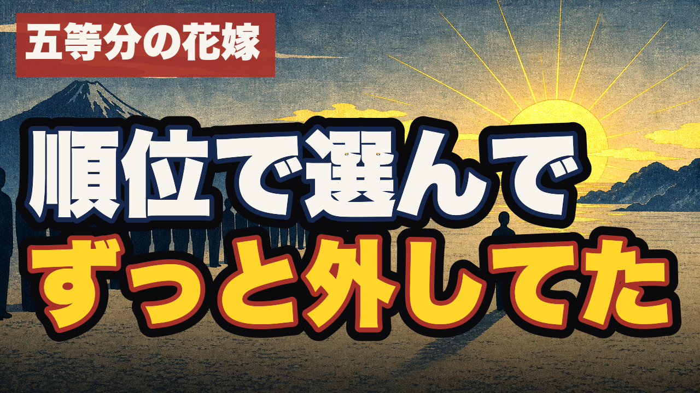

第41話 タイトル＆サムネ ・ 五等分の花嫁 × 帰妹
タイトル3案 ＆ サムネ3案
中心命題「順位で選ぶ結びは凶／永終で結べば吉」から。タイトルとサムネを1つずつお選びください（組み合わせ自由）。
タイトル3案
型は機械割付＝hole型（名場面/セリフを引用→←認知の穴で止める）＋末尾【アニメ考察・易経】。違いは"どの場面/どの穴"。
A【五等分の花嫁】四葉「上杉さんが嫌いです」←いちばん好きな人にだけ、こう嘘をつく子がいる【アニメ考察・易経】
四葉の名台詞。冒頭フック「いちばん好きだった人」と直結。恋愛の自己投影が最強。
B【五等分の花嫁】結婚式で花嫁を全員言い当てた風太郎←一人を選んでも、誰も順位で切り捨てなかった【アニメ考察・易経】
花嫁衣装の名場面。帰妹の核。結末は伏せたまま・考察の深さ。
C【五等分の花嫁】同じ顔の五つ子で"推し"がいちばんの子←なぜか、その子とは結ばれない【アニメ考察・易経】
"推し順"を引用し反直感の穴。検索/ブラウズで推し層に刺さる。
サムネ3案（実寸360px相当）

A 選ばれたのは／最下位の子（5花嫁・金の陽・帰妹バッジ）

B 本命ほど／続かない（遠ざかる人影へ手を伸ばす）

C 順位で選んで／ずっと外してた（列の外に光・日の出）
※題字はタイトルと語を重ねず"別の穴"にしています（ep40の学び）。卦バッジ＝帰妹の朱印。文字は焼き込み済み・画像内キャラは顔なし。
🚦 ご選択
タイトル A/B/C、サムネ A/B/C を1つずつ（例「タイトルA・サムネC」）。別案・題字修正の希望もOK。
決定後：タイトルはtitle-arm.mjs checkで型照合→registry反映、サムネはregistry.thumb確定→本番反映。ショート（隣の卦 漸→帰妹）も続けて作れます。